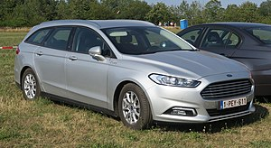
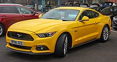
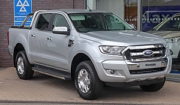
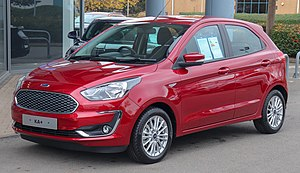
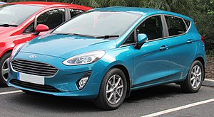
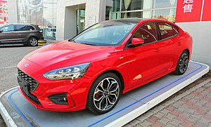

Ford C-Max (2003)

O C-Max é um monovolume compacto produzido pela Ford em Saarlouis para o mercado europeu desde 2003. Tal como o Ford Focus, utiliza a plataforma C1. Com capacidade para cinco passageiros, tem um espaço de carga generoso que pode ser aumentado dobrando os bancos traseiros. Algumas versões possuem dois bancos adicionais rebatíveis na bagageira, ficando assim com capacidade para sete ocupantes.
Ford Mondeo (2000)
O Mondeo é um modelo de porte médio grande produzido pela Ford desde 1993 na planta de Genk, Bélgica. De início existiam três versões possíveis: hatchback, sedan e station wagon. Foi fabricado nos Estados Unidos sob o nome de Ford Contour, entre 1995 e 2000, tendo também tido uma versão para a Mercury, chamada de Mystique. No Brasil desde 1995, foi oferecido nas configurações hatch, sedan e station wagon. Em 1997 este modelo foi reestilizado, procedendo-se apenas a modificações estéticas, já que a estrutura e motores mantiveram-se inalterados. O hatch deixou de ser oferecido no Brasil, mas ainda segue sendo vendido fora do país.
Ford Mustang(2012)
O Mustang de quinta geração foi introduzido pela Ford em 2004 no North American International Auto Show, a Ford nomeou sua carroceria de ''S-197". O desenvolvimento ficou sob controle do engenheiro Hau Thai-Tang e, o responsável pelo design do exterior foi Sid Ramnarace, o design dessa geração remete aos Mustang Fastback do final dos anos 60. O Mustang 2010 foi lançado em 2009 com um facelift que incluía lanternas traseiras com LEDs sequenciais. Em 2012 foi introduzido o Mustang Boss 302 que recebia o motor ''Coyote'' com 444 bhp. Também era disponibilizada uma versão chamada ''Laguna Seca'', essa versão tinha uma barra no lugar do banco traseiro para endurecimento da carroceria e melhorias no trem de força e na dirigibilidade.
Ford Ranger(2011)
A Ranger é uma picape média da Ford. No Brasil teve sua estreia no ano de 1994 de segunda geração do modelo, isto é, está a no mercado desde a metade da década de 90. Existiu também uma versão fabricada pela Mazda como serie "B" Mazda B-Series. Esta camionete é fabricada nos Estados Unidos para o mercado norte-americano, e também fabricado na Argentina na fábrica da Ford em General Pacheco para os mercados latino-americano da Argentina, Brasil, Chile, Peru e México, entre outros.[1][2] No Brasil, tem como concorrente a picape, também veterana, Chevrolet S-10, praticamente com a mesma idade, e as outras Mitsubishi L200, Volkswagen Amarok, Toyota Hilux e Nissan Frontier no mercado de picapes leves.[nota 1] A última atualização da Ranger, no Brasil, se deu no segundo semestre do ano de 2012, deixando-a muito mais moderna do que a geração anterior e, com a adoção do câmbio automático, para concorrer diretamente com Volkswagen Amarok, Chevrolet S-10, Nissan Frontier e Toyota Hilux.
Ford Ka(2018)
O Ka é um modelo de carro urbano fabricado pela Ford no Brasil, em sua fábrica em Camaçari, anteriormente em São Bernardo do Campo e na Europa. A versão brasileira era exportada para toda América Latina, enquanto a versão européia é produzida em Valência, na Espanha. No Brasil era um subcompacto na primeira geração, na Europa oferecia também versões esportivas (denominado SportKa) e conversíveis (denominado StreetKa). Na segunda geração, passou a ser um compacto. Em sua terceira geração passou a oferecer duas versões de carrocerias: hatch (denominado Ka) e sedan (denominado Ka+).
Ford Fiesta (2019)
O Fiesta é um carro hatchback produzido pela Ford desde 1976. Atualmente, se encontra em sua sétima geração. O Fiesta é um projeto global, sendo fabricado e comercializado em vários lugares do mundo. É comercializado em vários lugares da Europa, América, Ásia, Oceania e África. Mais de 16 milhões de unidades já foram vendidas desde o lançamento, o que torna o Fiesta o terceiro veículo mais vendido da Ford atrás apenas do Escort e da F-Series. Foi retirado de linha na América do Sul em 2019, por causa das baixas vendas.
Ford Focus(2019)
Focus é um automóvel fabricado pela Ford a partir de 1998 para suceder o Escort e, à época de seu lançamento, disputar mercado com os mais modernos Fiat Brava, Chevrolet Astra (Opel Astra em Portugal) e Volkswagen Golf. Oferecendo motores mais modernos do que o modelo substituído e novo design, a Ford pretendia que Focus alcançasse o mesmo sucesso que o antecessor Escort. Uma de suas inovações na categoria foi a suspensão traseira multibraço, o que permitiu que o Focus disputasse com o Golf a qualificação de hatch que proporciona mais prazer em dirigir. A versão vendida na América do Sul começou a ser produzida em 2000, na fábrica de General Pacheco, Argentina, de onde, desde então, foi exportado ao Brasil. Foi retirado de linha no país e na América do Sul em 2019, pelas baixas vendas e da decadência de hatches médios no continente.